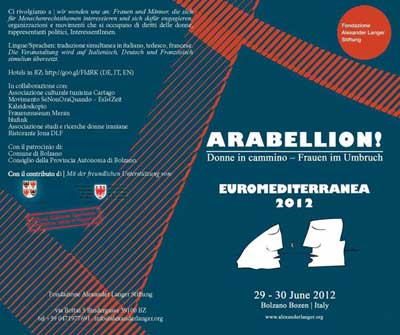
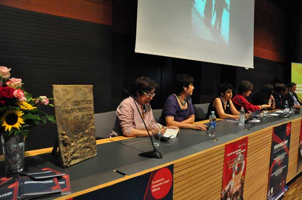
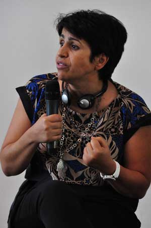
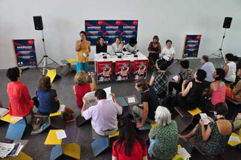
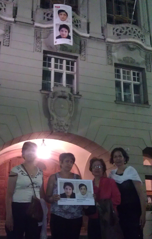
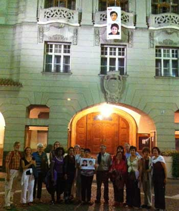

|
|
اهدای جایزه بنیاد الکساندر لانگر به انجمن زنان دموکراتیک تونس و ابراز همبستگی برای آزادی نرگس محمدی و نسرین ستوده
شنبه17 تیر 1391

تغییر برای برابری - صبری نجفی
اواخر ماه جون (29 و 30)، مراسمی دو روزه با عنوان «عربلیون (طغیان زنان عرب) / زنان در حرکت» ,« Donne in cammino- Frauen im Umbruch
/Arabellion » از سوی بنیاد الکساندر لانگر در شهر بولزانوی ایتالیا برگزار شد. روز نخست این برنامه به اهدای جایزه بنیاد الکساندر لانگر به انجمن زنان دموکراتیک تونس برنده سال 2012 بنیاد اختصاص داشت. در این مراسم احلام بالحاج، هدیا یراد و سعیدا راچد به نمایندگی از این سازمان حضور داشتند. سخنگوی بنیاد دلیل اهدای جایزه لانگر به انجمن زنان دموکراتیک تونس را مستقل بودن این انجمن از حکومت و دفاع مستمر آن از حقوق زنان و حقوق بشر ذکر کرد. مسئول فرصت های برابر در شهر بولزانو نیز ضمن ابراز خوشحالی از این که مجددا زنان برنده جایزه بنیاد شده اند گفت: این اقدام هم نشان دهنده جلب توجه بنیاد به وضعیت حقوق زنان است و هم امکان آشنایی و ارتباط بین جنبش های زنان را افزایش می دهد. بنیاد الکساندر لانگر را دوستان و همکاران او در 1999 پس از مرگ لانگر پایه گذاری کردند. این بنیاد به مسائل اجتماعی و صلح توجه دارد.

انجمن زنان دمکراتیک تونس از معدود سازمان های مستقل و فمنیستی تونسی است که از سال 1989 فعالیت خود را آغاز کرده است. مخالفت با سیاست های دیکتاتوری، دفاع از حقوق زنان، مبارزه علیه خشونت و دفاع از حقوق همجنسگرایان، مقابله با فرهنگ پدرسالارانه، تلاش برای افزایش مشارکت سیاسی و اجتماعی زنان در جامعه، تاکید بر جدایی دین از دولت از جمله اهداف این انجمن بوده است.

احلام بالحاج رییس هیات مدیره و سخنگوی انجمن دمکراتیک زنان تونس، ضمن ابراز خوشحالی از دریافت جایزه گفت: این تلاش ها امید ما را برای تحقق خواسته هایمان، از جمله رسیدن به برابری حقوقی زن و مرد در خانواده، عدالت اجتماعی، مبارزه با خشونت و خشونت سیاسی، به حاشیه راندن زنان و ارتقای حقوق شهروندی بیشتر می کند. ما هنوز با تبعیض مواجه ایم، سیاستمداران ما باید بپذیرند که مشارکت زنان بدون حضور زنان و درگیر کردن آنها در سیاست ممکن نیست، بدون برابری حقوق زنان در ارث نمی توان از برابری حقوق زنان حرف زد. ما مشکلات زیادی مواجه هستیم. بعد از رفتن بن علی شرایط بهتر شد اما مبارزه ما هنوز ادامه دارد. تلاش امروز ما وارد روند جدیدی شده است، سازمان ها و نهادهای گذشته برای تغییر نیازمند زمان هستند. ما نیازمند رفرم های زیادی هستیم. از مهم ترین آنها جدا کردن مذهب از دولت است، احزاب سیاسی بسیاری هستند که می خواهند از مذهب و شریعت به عنوان ابزار سیاسی استفاده کنند و ما باید بر آن آگاه باشیم. نباید بگذاریم که بدن زنان وسیله سیاسی رهبران سیاسی شود. هنوز بحث درباره قانون اساسی وجود دارد، اصول بنیادی و اساسی چون دموکراسی و برابری جنسیتی باید در قانون اساسی ما حفظ شود. زنان تونسی مدت هاست که در گیر مبارزه هستند و در حال حاضر هم می کوشند بر سیاست گذاری و ارتقای حقوق مدنی و سیاسی تاثیر بگذارند و همچنان هم به مبارزه خود ادامه می دهند.
او ضمن اشاره به وضعیت زنان در ایران گفت ما نباید بگذاریم آنچه در ایران و علیه زنان انجام گرفت درتونس هم تکرارشود .

برنامه روز دوم بنیاد الکساندر لانگر به برگزاری یک نشست و سه کارگاه اختصاص داشت. همراه با نمایندگان انجمن زنان دموکراتیک تونس، فعالان حقوق زنان از کشورهای ایتالیا، ماریانا تراگنی/ ایران، پروین اردلان/ و رواندا، فرانسواز کن کیندی شرکت داشتند. وضعیت حقوق زنان در این کشورها، مسائل، اشتراک ها و تفاوت ها و نقش جنبش های زنان در حمایت از یکدیگر، تصویر زنان در رسانه ها، خشونت علیه زنان و نقش اروپا... مورد بحث قرار گرفت.
ابراز همبستگی برای آزادی نرگس محمدی

تلاش برای آزادی نرگس محمدی برنده جایزه الکساندر لانگر 2009 در مراسم اهدای جایزه فعالان تونسی نیز از سوی این بنیاد و کمیسیون حقوق بشر ایتالیادنبال شد. پس از دستگیری نرگس محمدی این بنیاد در کنفرانس مطبوعاتی، تقاضای آزادی او را مطرح کرد. پس از اعلام وخامت وضعیت جسمی وی نیز با صدور بیانیهای از مردم ایتالیا و نمایندگان مجلس و سنای این کشور خواست که آن را برای درخواست آزادی نرگس محمدی امضا کنند. هنگام دیدار فعالان زن تونسی، برندگان جایزه الکساندر لانگر2012، با اعضای پارلمان ایتالیا، پی گیری از وضعیت نرگس ادامه داشت. بنیاد لانگر در مراسم اهدای جایزه فعالان زن تونسی ضمن گزارشی از روند تلاش های بنیاد از آزادی نرگس ارائه کرد و رئیس کمیسیون حقوق بشر ایتالیا، پیترو مارچنارو با اشاره به پی گیری های این کمیسیون در دیدار با سفیر ایران و وزارت خارجه ایتالیا اعلام کرد :« نرگس محمدی قربانی فشار وخشونت است و تلاشمان را برای آزادی وی انجام می دهیم .»

در مراسم اهدای جایزه به مبارزان تونسی، شهردار بولزانو نیز ابراز داشت که استان بولزانو استانی مرزی و دوملیتی است. ما با وجود سختی هایی که در دوران فاشیسم از سر گذراندیم اکنون تلاش مان بر توافق و یادگیری و همبستگی است. این همان نگاه لانگراست که تاکیدش همواره بر برداشتن مرزها و ایجاد پل های دوستی بود و در حال حاضر ما نیازمند آن هستیم که برای تحقق آرمان های لانگر از یکدیگر حمایت کنیم. شهرداری بولزانو حمایت از فعالان مدنی در ایران را ماه گذشته نشان داد. پنجم جون ماه گذشته با در خواست حامیان مادران پارک لاله در ایتالیا و به همت شهرداری بولزانو، تصاویر نرگس محمدی و نسرین ستوده، دو فعال حقوق زنان و بشر زندانی در ایران، از بالکن شهرداری شهر بولزانو ایتالیا آویخته شد. این حرکت نمادین برای اعلام اعتراض نسبت به بازداشت این دو فعال مدنی و جلب توجه افکار عمومی به وضعیت حقوق بشر انجام شد و قرار شد تصاویر دو فعال برجسته حقوق زنان و حقوق بشر به مدت سه ماه آویزان بماند. 30 جون نیز برندگان جایزه الکساندر لانگر و همچنین اعضای این بنیاد نیز در همبستگی با این حرکت نمادین به میدان شهر آمدند و با دردست گرفتن تصاویر نسرین و نرگس در کنار تصاویر آویخته آنان پشتیبانی خود را از فعالان مدنی و حقوق بشر نشان دادند.
نرگس محمدی برنده جایزه الکساندر لانگر برای اجرای حکم شش سال حبس به زندان زنجان منتقل شد. او بار نخست در زندان به فلج عضلانی مبتلا شده بود بار دیگر به دلیل فشار روانی و استرس بالا درزندان مجددا دچاراین بیماری شد. او در نامه ای به مسئولان قضایی ایران اعلام داشت : «مصرا و موکدا اعلام می کنم که چنین رفتارواقدامی با من درواقع مرگ تدریجی من است که مسئولیت آن بامسئولین است.مسئولان محترم که پرونده پزشکی من راکاملا دراختیاردارندآگاهند که نگهداری من درمحیط پراضطراب زندان به ویژه بندجرائم عادی (قتل،اعدام،موادمخدرو…) شرایطی که بنابه مصالح عمومی جامعه ازگفتن آن سربازمی زنم،نوعی کشتن عمد است که مسئولیت مستقیم آن برعهده آنان می باشد.امیدوارم بنا نباشد که همچون شهادت هاله سحابی وهدی صابرکه گفته شد به علت گرمای هواواعتصاب غذابود!حادثه دیگری البته به ظاهرطبیعی رخ دهد که به این ترتیب اعلام می کنم ،نه تنهاطبیعی نخواهدبودبلکه تشدید بیماری یا بروزهرحادثه ناگوار دیگری دراین شر ایط برای من کاملاعامدانه است.»